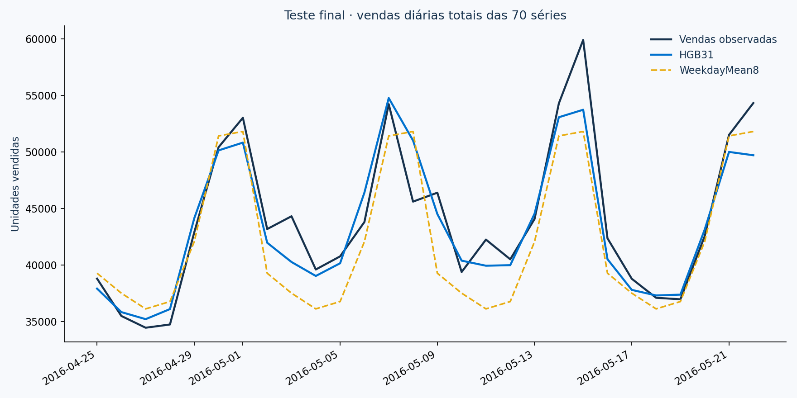
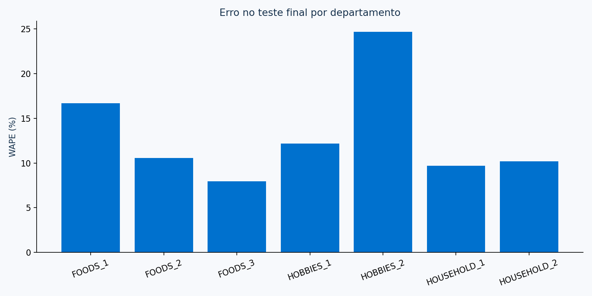
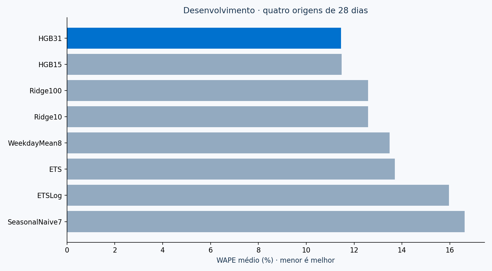

O modelo superou a referência no teste histórico.
WAPE de 9,99%, contra 12,05% da média sazonal de oito semanas: redução relativa de 17,1% no erro. É evidência favorável nesse período, sem demonstração de economia de estoque ou ROI.
01 / BUSINESS CONTEXT
Prever vendas antes de planejar a reposição.
A base pública contém 30.490 séries produto–loja. Agregamos todas em 70 combinações de dez lojas e sete departamentos. O objetivo é estimar vendas observadas, com erro e incerteza explícitos, para apoiar a investigação de necessidades operacionais.
Sem estoque disponível, rupturas, lead times ou custos, não calculamos demanda perdida, pedido ótimo ou economia. O estudo usa dados de 2011–2016; não representa previsão atual de Walmart.
02 / TEMPORAL VALIDATION
Cada previsão respeita sua data de origem.
Quatro janelas históricas de 28 dias escolhem o modelo. Depois, congelamos a configuração e avaliamos um período final separado. A previsão do dia 28 usa apenas vendas disponíveis no corte, sem observar os dias anteriores do próprio horizonte.
BacktestingJan–abr 2016
Congelamento24 abr 2016
Teste final25 abr–22 mai 2016
Oito candidatos: duas referências sazonais, ETS com e sem log, duas regressões Ridge e dois HistGradientBoosting. ML usa defasagens de 28 dias ou mais, calendário e SNAP; preço futuro fica fora.
03 / FINAL TEST
Um teste de 28 dias. A mesma comparação.
O HistGradientBoosting foi escolhido pela média de erro nas quatro janelas de desenvolvimento. No teste final, reduziu o erro e apresentou viés de −1,29% no total de unidades. WAPE soma erros absolutos e divide pelas vendas observadas; menor é melhor.

04 / FORECAST EXPLORER
Explore o horizonte e a incerteza.
Exemplo CA_1 / FOODS_3, definido antes dos resultados. O trecho à direita mostra as previsões dos 28 dias seguintes ao corte. Altere as camadas para examinar o intervalo e as vendas posteriormente observadas.
Azul: previsão; cinza: histórico/observado; faixa azul: intervalo individual. Cobertura nominal não é garantia futura ou simultânea dos 28 dias.
05 / DEPARTMENT PROFILES
O resultado agregado não conta toda a história.
Escolha um departamento para verificar erro, viés e cobertura no teste. HOBBIES_2 teve maior erro e cobertura abaixo de 90%; FOODS_1 mostrou subestimação relevante. Esses pontos pedem investigação antes de qualquer ação automática.
Cobertura geral de 91,4% não significa cobertura semelhante em todos os departamentos. Intervalos são calibrados com erros de desenvolvimento e avaliados sem ajuste no teste.

06 / MODEL COMPARISON
O ganho vem de uma comparação reproduzível.
HistGradientBoosting com 31 folhas teve o menor WAPE médio no desenvolvimento: 11,46%. A referência de média por dia da semana ficou em 13,48%. A escolha ocorreu antes de abrir o teste final.
Estatísticos e ML usam os últimos 730 dias disponíveis; referências usam suas janelas declaradas. Esta avaliação de 70 séries não é o WRMSSE oficial dos 12 níveis M5 e não reivindica colocação na competição.

07 / UNCERTAINTY
Incerteza observada, com limites claros.
Os intervalos nominais de 90% cobriram 91,4% das observações no teste. Foram calibrados por departamento com resíduos fora da amostra nas janelas de desenvolvimento. Dependência temporal, poucas janelas e seleção do modelo limitam a garantia de cobertura futura.
08 / OPERATIONAL NEXT STEPS
O próximo passo é validar a decisão operacional.
- Repetir o backtesting com dados recentes e diferentes épocas do ano.
- Incluir estoque disponível, rupturas, lead times e custos reais.
- Investigar subestimação e baixa cobertura por departamento.
- Validar políticas de reposição em piloto controlado antes de automatizar pedidos.
O estudo completo está aberto.
Notebook CRISP-DM executado, comparações históricas, artefato congelado, previsão em lote, dashboard Streamlit, testes temporais e resultados auditáveis.
Ver projeto no GitHub ↗